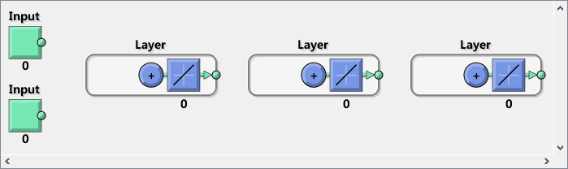
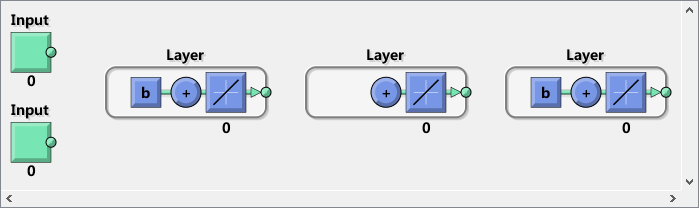
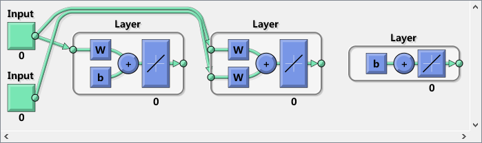
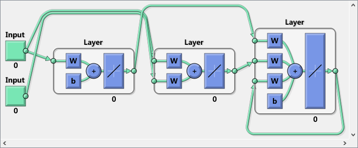
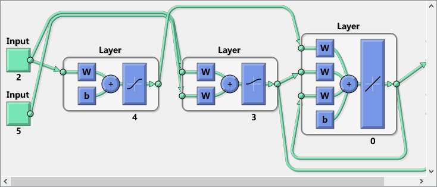

Contents
Matlab神经网络43个案例分析
% 定制神经网络的实现-神经网络的个性化建模与仿真 % by 王小川(@王小川_matlab) % http://www.matlabsky.com % Email:sina363@163.com % http://weibo.com/hgsz2003
清空环境变量
clear all clc warning off
建立一个“空”神经网络
net = network
net =
Neural Network
name: 'Custom Neural Network'
efficiency: .cacheDelayedInputs, .flattenTime,
.memoryReduction
userdata: (your custom info)
dimensions:
numInputs: 0
numLayers: 0
numOutputs: 0
numInputDelays: 0
numLayerDelays: 0
numFeedbackDelays: 0
numWeightElements: 0
sampleTime: 1
connections:
biasConnect: []
inputConnect: []
layerConnect: []
outputConnect: []
subobjects:
inputs: {0x1 cell array of 0 inputs}
layers: {0x1 cell array of 0 layers}
outputs: {1x0 cell array of 0 outputs}
biases: {0x1 cell array of 0 biases}
inputWeights: {0x0 cell array of 0 weights}
layerWeights: {0x0 cell array of 0 weights}
functions:
adaptFcn: (none)
adaptParam: (none)
derivFcn: 'defaultderiv'
divideFcn: (none)
divideParam: (none)
divideMode: 'sample'
initFcn: 'initlay'
performFcn: 'mse'
performParam: .regularization, .normalization
plotFcns: {}
plotParams: {1x0 cell array of 0 params}
trainFcn: (none)
trainParam: (none)
weight and bias values:
IW: {0x0 cell} containing 0 input weight matrices
LW: {0x0 cell} containing 0 layer weight matrices
b: {0x1 cell} containing 0 bias vectors
methods:
adapt: Learn while in continuous use
configure: Configure inputs & outputs
gensim: Generate Simulink model
init: Initialize weights & biases
perform: Calculate performance
sim: Evaluate network outputs given inputs
train: Train network with examples
view: View diagram
unconfigure: Unconfigure inputs & outputs
输入与网络层数定义
net.numInputs = 2; net.numLayers = 3;
使用view(net)观察神经网络结构。
view(net) % 此时神经网络有两个输入，三个神经元层。但请注意：net.numInputs设置的是 % 神经网络的输入个数，每个输入的维数是由net.inputs{i}.size控制。
阈值连接定义
net.biasConnect(1) = 1;
net.biasConnect(3) = 1;
% 或者使用net.biasConnect = [1; 0; 1];
view(net)
 输入与层连接定义
net.inputConnect(1,1) = 1;
net.inputConnect(2,1) = 1;
net.inputConnect(2,2) = 1;
% 或者使用net.inputConnect = [1 0; 1 1; 0 0];
view(net)
net.layerConnect = [0 0 0; 0 0 0; 1 1 1];
view(net)
  输出连接设置
net.outputConnect = [0 1 1]; view(net)
输入设置
net.inputs
net.inputs{1}
net.inputs{1}.processFcns = {'removeconstantrows','mapminmax'};
net.inputs{2}.size = 5;
net.inputs{1}.exampleInput = [0 10 5; 0 3 10];
view(net)
ans =
[1x1 nnetInput]
[1x1 nnetInput]
ans =
Neural Network Input
name: 'Input'
feedbackOutput: []
processFcns: {}
processParams: {1x0 cell array of 0 params}
processSettings: {0x0 cell array of 0 settings}
processedRange: []
processedSize: 0
range: []
size: 0
userdata: (your custom info)
层设置
net.layers{1}
% 将神经网络第一层的神经元个数设置为4个，其传递函数设置为“tansig”并
% 将其初始化函数设置为Nguyen-Widrow函数。
net.layers{1}.size = 4;
net.layers{1}.transferFcn = 'tansig';
net.layers{1}.initFcn = 'initnw';
% 将第二层神经元个数设置为3个，其传递函数设置为“logsig”，并使用“initnw”初始化。
net.layers{2}.size = 3;
net.layers{2}.transferFcn = 'logsig';
net.layers{2}.initFcn = 'initnw';
% 将第三层初始化函数设置为“initnw”
net.layers{3}.initFcn = 'initnw';
view(net)
ans =
Neural Network Layer
name: 'Layer'
dimensions: 0
distanceFcn: (none)
distanceParam: (none)
distances: []
initFcn: 'initwb'
netInputFcn: 'netsum'
netInputParam: (none)
positions: []
range: []
size: 0
topologyFcn: (none)
transferFcn: 'purelin'
transferParam: (none)
userdata: (your custom info)
 输出设置
net.outputs
net.outputs{2}
ans =
[] [1x1 nnetOutput] [1x1 nnetOutput]
ans =
Neural Network Output
name: 'Output'
feedbackInput: []
feedbackDelay: 0
feedbackMode: 'none'
processFcns: {}
processParams: {1x0 cell array of 0 params}
processSettings: {0x0 cell array of 0 settings}
processedRange: [3x2 double]
processedSize: 3
range: [3x2 double]
size: 3
userdata: (your custom info)
阈值，输入权值与层权值设置
net.biases
net.biases{1}
net.inputWeights
net.layerWeights
ans =
[1x1 nnetBias]
[]
[1x1 nnetBias]
ans =
Neural Network Bias
initFcn: (none)
learn: true
learnFcn: (none)
learnParam: (none)
size: 4
userdata: (your custom info)
ans =
[1x1 nnetWeight] []
[1x1 nnetWeight] [1x1 nnetWeight]
[] []
ans =
[] [] []
[] [] []
[1x1 nnetWeight] [1x1 nnetWeight] [1x1 nnetWeight]
将神经网络的某些权值的延迟进行设置
net.inputWeights{2,1}.delays = [0 1];
net.inputWeights{2,2}.delays = 1;
net.layerWeights{3,3}.delays = 1;
网络函数设置
将神经网络初始化设置为“initlay”，这样神经网络就可以按照 我们设置的层初始化函数“ initnw”即Nguyen-Widrow进行初始化。
net.initFcn = 'initlay'; % 将神经网络的误差设置为“mse”（mean squared error），同时将神经网络的训练函数 % 设置为“trainlm”Levenberg-Marquardt backpropagation)。 net.performFcn = 'mse'; net.trainFcn = 'trainlm'; % 为了使神经网络可以随机划分训练数据集，我们可以将divideFcn设置为“dividerand”。 net.divideFcn = 'dividerand'; % 将 plot functions设置为：“plotperform”,“plottrainstate” net.plotFcns = {'plotperform','plottrainstate'};
权值阈值大小设置
net.IW{1,1}, net.IW{2,1}, net.IW{2,2}
net.LW{3,1}, net.LW{3,2}, net.LW{3,3}
net.b{1}, net.b{3}
ans =
0 0
0 0
0 0
0 0
ans =
0 0 0 0
0 0 0 0
0 0 0 0
ans =
0 0 0 0 0
0 0 0 0 0
0 0 0 0 0
ans =
Empty matrix: 0-by-4
ans =
Empty matrix: 0-by-3
ans =
[]
ans =
0
0
0
0
ans =
Empty matrix: 0-by-1
神经网络初始化
net = init(net);
net.IW{1,1}
ans =
-2.7851 0.2880
2.1169 -1.8327
0.6403 -2.7258
-1.8147 2.1323
神经网络的训练
X = {[0; 0] [2; 0.5]; [2; -2; 1; 0; 1] [-1; -1; 1; 0; 1]};
T = {[1; 1; 1] [0; 0; 0]; 1 -1};
Y = sim(net,X)
Y =
[3x1 double] [3x1 double]
[0x1 double] [0x1 double]
神经网络的训练参数
net.trainParam
ans =
Function Parameters for 'trainlm'
Show Training Window Feedback showWindow: true
Show Command Line Feedback showCommandLine: false
Command Line Frequency show: 25
Maximum Epochs epochs: 1000
Maximum Training Time time: Inf
Performance Goal goal: 0
Minimum Gradient min_grad: 1e-07
Maximum Validation Checks max_fail: 6
Mu mu: 0.001
Mu Decrease Ratio mu_dec: 0.1
Mu Increase Ratio mu_inc: 10
Maximum mu mu_max: 10000000000
训练网络
net = train(net,X,T);
仿真来检查神经网络是否相应正常。
Y = sim(net,X)
Y =
[3x1 double] [3x1 double]
[ 1.0000] [ -1.0000]